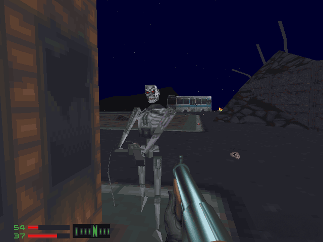
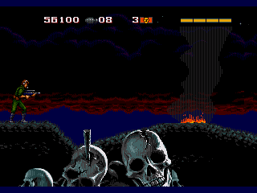

En esta página encontrarás el listado completo con todos los juegos de Terminator que existen,
ordenados según su fecha de lanzamiento para que puedas saber cuál es el último juego de
Terminator que se ha anunciado o que ya ha salido a la venta, y cuál fue el primer juego de
todos con el que se inició la saga.
Terminator: Resistance (2019)
Desarrollado por Teyon.
Plataformas: PS4, Steam y Xbox One.
Terminator Salvation: El videojuego (2009)
Desarrollado por Halcyon Games junto con Grin.
Publicado por Equity Games y Envolved Games.
Plataformas: Microsoft Windows, PlayStation 3, Xbox360, móvil e iOS.
Terminator 3: Redemption (2004)
Desarrollado por Paradigm Entertainment.
Plataformas: PS2, GameCube y Xbox.
Terminator 3: La Rebelión de las Máquinas (2003)
Desarrollado por Black Ops Entertainment.
Plataformas: PS2, GBA, Xbox y móvil.
The Terminator: Dawn of Fate (2002)
Desarrollado por Paradigm Entertainment.
Plataformas: PS2 y Xbox.
The Terminator: SkyNET (1996)
Desarrollado por Bethesda Softworks.
Plataforma: DOS.

The Terminator: Future Shock (1995)
Desarrollado por Bethesda Softworks.
Plataforma: DOS.
Primer juego que introdujo el ratón como sistema de movimiento.
Robocop versus The Terminator (1994)
Desarrollado por Virgin Games USA.
Plataformas: Mega Drive, Master System, Game Gear, Super Nintendo y Game Boy.
The Terminator (1993)
Desarrollado por Virgin Games USA.
Plataforma: Sega Mega-CD.
Basado en la primera película de la saga.

Terminator 2: Judgment Day (1993)
Desarrollado por Bits Studios, Arc Developments y Probe Entertainment.
Plataformas: Mega Drive y Super Nintendo.
Terminator 2: The Arcade Game (1991)
Desarrollado por Midway y Probe Entertainment.
Plataformas: Arcade, Mega Drive, Super Nintendo, Master System
Game Gear, Game Boy, Amiga y DOS.